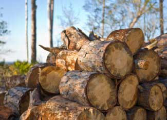

Wood heating has many advantages. Wood is a renewable fuel, it’s widely available in many parts of North America, and in some situations, heating with wood can save you money.
If you’re interested in wood heat, right now is the best time to explore your options for a woodstove or other wood heating system. Because spring is the slow season, wood heat retailers may sweeten the deal to get your business this time of year.
But before making a purchase, be sure to research your options and seek out good advice. This will be time well spent, because it can help you avoid costly mistakes. Wood heating isn’t for everyone, but with a little research and planning, you may discover that it’s a great option for you. Here are a few things to consider when evaluating your options.
Calculating the Costs and Benefits
In many cases, heating with wood will save you money, but this is not true for everyone. If you live in a forested rural area and can do some of the processing of the wood yourself, you can save some money - especially if you already have a truck or trailer and are handy with a chain saw and splitting maul. But if you have to buy split firewood and have it delivered to your suburban home, you probably won’t save much.
To get a rough idea of the cost savings, you can try various online tools, such as this fuel cost calculator. However, no calculator can give you a completely accurate figure for how much you will save. Most can’t figure in supplementary heating, in which only a portion of the conventional fuel cost is displaced. Nor can they take account of the time you would devote to all the tasks involved in wood heating.
After all, if you paid yourself minimum wage for all the cutting, splitting, stacking, fire stoking, ash removal and so on, the savings would quickly evaporate. So even if your main motivation is to save money, also consider if the other benefits appeal to you-the ones that seem to sustain the most successful users of wood energy. If you enjoy physical work and a regular routine, and if you would like to be more self-reliant and less dependent on fossil fuels, than wood heating might be for you.
Consider the Options: Woodstoves, Boilers, Pellet Stoves and More
One of the first things you’ll have to decide is what kind of system to buy, because there are several different wood heating technologies, and all of them have pros and cons.
The least expensive and most efficient way to heat with wood is with a woodstove located in the main living area of the home. Clean burning stoves certified by the U.S. Environmental Protection Agency (EPA) average around 70 percent fuel efficiency, and by putting your heater in the main living area you save energy because the warmth is concentrated where you spend most of your time, not in other areas such as bedrooms.
However, if you want to heat the whole house to an even temperature and keep fuel wood out of living areas, you could opt for a wood boiler or central furnace. Unfortunately, it can be hard to find efficient boilers and furnaces. The most efficient wood boilers are downdrafts, sometimes called gasifiers. If a forced-air furnace is more suitable for your house, you can look for one of the few that are EPA-certified. Although it may not be easy to find high efficiency, clean-burning wood furnaces and boilers, the effort is worthwhile because the difference in fuel consumption, convenience and maintenance costs between older conventional units and these advanced furnaces and boilers is large.
If you live in the city or suburbs, consider a pellet stove, furnace or boiler. The 40 pound plastic bags of pellets are neat and easy to store and all the processing work is already done for you. You can probably save some money by heating with pellets, but you won’t gain independence because you can’t make the fuel yourself and you won’t have security from power outages because pellet stoves need electricity to run their fuel auger, fans and controls.
Other Considerations for a Wood Heating System
Whatever type of wood heating system you choose, you’ll want to be sure it’s well-designed and safely installed. When considering these issues, keep in mind that a critical part of any wood heating system is the chimney. It’s the chimney draft that draws in combustion air and sends the exhaust outdoors. Bad chimneys create wood heat nightmares because their low draft means a cloud of smoke rolling into the house every time the stove door is opened to add wood. The biggest mistake you can make is to install the chimney out through a wall and up the outside of the house. There is nearly always a way to route the chimney up through the inside of the house, and it is well worth the effort.
Wood heat has many benefits, including the beauty of the natural wood fire, the warm spot in the house to gather around, the security of knowing that you’ll be warm and comfortable if the electrical power grid fails in a storm, and freedom from energy suppliers who only care about the big check you send them each month. Chosen wisely, a wood heating system can provide many years of comfort, pleasure and savings.
John Gulland regularly writes about wood heating for Mother Earth News. For more information, you can find more of his articles here, and visit his Web site at woodheat.org.
|
 ISTOCKPHOTO/CHRISHAYWARD Heating your home with wood can make you more self-reliant and save you money, too. |
|
|